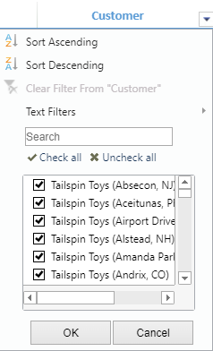

TableSheet provides the ability to sort and filter by columns in a TableSheet view. You can use the filter button (down arrow icon) on the column headers to display the filter dialog.

You can control the visibility of each part of a TableSheet filter dialog using IColumn options such as allowSort, allowFilterByValue and allowFilterByList.
The following code sample shows how to set a filter dialog in each column with specific filter options.
| JavaScript |
Copy Code
|
|---|---|
//bind a view to the table sheet customerTable.fetch().then(function () { var view = customerTable.addView("myView", [ { value: "customerKey", width: 150, caption: "Customer Key", allowSort: false, allowFilterByValue: false, allowFilterByList: false }, // this will disable the filter button in column header { value: "customer", width: 200, caption: "Customer", allowSort: false }, // this will hide only sorting in filter dropdown { value: "billToCustomer", width: 200, caption: "Bill To Customer", allowFilterByValue: false}, // this will hide only allowFilterByValue { value: "category", width: 120, caption: "Category", allowFilterByList: false }, // this will hide only allowFilterByList { value: "buyingGroup", width: 180, caption: "Buying Group" }, { value: "primaryContact", width: 170, caption: "Primary Contact" }, { value: "postalCode", width: 120, caption: "Postal Code" }, { value: "validFrom", width: 150, caption: "Valid From" }, { value: "validTo", width: 180, caption: "Valid To" } ]); //the View has all default columns of the Table sheet.setDataView(view); }); |
|
You can sort data in a field by choosing either ascending or descending option from the Filter Dialog.
The TableSheet is re-sorted automatically by default when values are modified, but you can disable the behavior by setting the autoSort property when defining the TableSheet view.
| JavaScript |
Copy Code
|
|---|---|
//bind a view to the table sheet customerTable.fetch().then(function () { var view = customerTable.addView("myView", [ { value: "customerKey", width: 120, caption: "Customer Key" }, { value: "customer", width: 200, caption: "Customer" }, { value: "billToCustomer", width: 200, caption: "Bill To Customer" }, { value: "buyingGroup", width: 200, caption: "Buying Group" }, { value: "primaryContact", width: 170, caption: "Primary Contact" }, { value: "postalCode", width: 120, caption: "Postal Code" }, { value: "validFrom", width: 190, caption: "Valid From" } ]); // set autoSort property to false to prevent sorting after editing a cell value in sorted column view.autoSort = false; //the View has all default columns of the Table sheet.setDataView(view); }); |
|
You can filter data in a field to narrow down the data in the TableSheet and and display the data of interest.
You can use any of the following two methods to filter data in a TableSheet.
A custom filter dialog is opened after choosing a filter item ("contains", "ends with", "greater than", "between", "before", and so on).
The TableSheet is not re-filtered automatically by default when values are modified, but you can enable the behavior by setting the autoFilter property when defining the TableSheet view.
This property filters out any new or updated value if it is the same as a filtered-out value, otherwise any new value will not be filtered regardless of the filter criteria.
| JavaScript |
Copy Code
|
|---|---|
//bind a view to the table sheet customerTable.fetch().then(function () { var view = customerTable.addView("myView", [ { value: "customerKey", width: 120, caption: "Customer Key" }, { value: "customer", width: 200, caption: "Customer" }, { value: "billToCustomer", width: 200, caption: "Bill To Customer" }, { value: "buyingGroup", width: 200, caption: "Buying Group" }, { value: "primaryContact", width: 170, caption: "Primary Contact" }, { value: "postalCode", width: 120, caption: "Postal Code" }, { value: "validFrom", width: 190, caption: "Valid From" } ]); // set autoFilter to true to filter any new or updated values that are the same as a filtered value view.autoFilter = true; //the View has all default columns of the Table sheet.setDataView(view); }); spread.resumePaint(); |
|